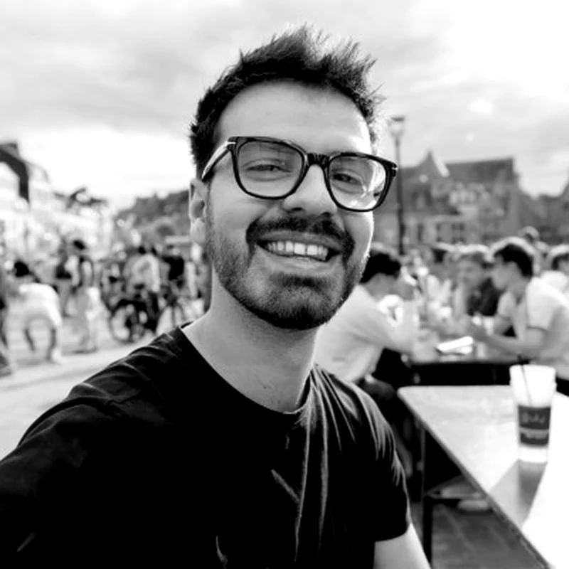

Photo à venir
Portfolio
Mariage
Des préparatifs à la dernière danse, votre histoire racontée avec douceur.
Mariages, événements, entreprises : je capture les émotions telles qu'elles se vivent, sans poses figées, pour vous offrir des souvenirs qui vous ressemblent.
Découvrir
Une belle photo, c'est un moment qu'on revit à chaque fois qu'on la regarde. Je me fonds dans votre journée pour saisir les rires, les regards et les détails qui la rendent unique. Des images sincères, pensées pour durer.
Des préparatifs à la dernière danse, votre histoire racontée avec douceur.
Soirées, concerts, lancements : l'énergie de vos événements, du début à la fin.
Portraits, équipes et images de marque pour votre site et vos réseaux.
Photographe dans le Nord-Pas-de-Calais, je me déplace partout pour vous : à Lille, dans toute la région… et au-delà.
Vivez pleinement votre journée, je m'occupe de préserver vos souvenirs.
L'effervescence du matin, les derniers ajustements, les émotions qui montent. Ces instants discrets donnent le ton de toute la journée.
Les regards, les mains qui tremblent, les larmes de joie. Je reste en retrait pour ne rien perturber et ne rien manquer.
Vos proches, les retrouvailles, les détails que vous avez choisis avec soin. Tout ce qui fait l'ambiance de votre fête.
La première danse, les éclats de rire, la piste qui s'enflamme. L'énergie de la nuit, capturée sur le vif.
Photographe basé à Lille, j'aime les gens, les fêtes et les moments qui ne se rejouent pas. Mon objectif : que vous oubliiez l'appareil, pour que vos photos gardent toute leur spontanéité.
Que ce soit pour votre mariage, un événement ou l'image de votre entreprise, je vous accompagne avec écoute et bonne humeur, et je vous livre des photos soignées, prêtes à être partagées.
Mes derniers shootings arrivent très prochainement
Vous recherchez un photographe dans le Nord-Pas-de-Calais ?
Contactez-moi